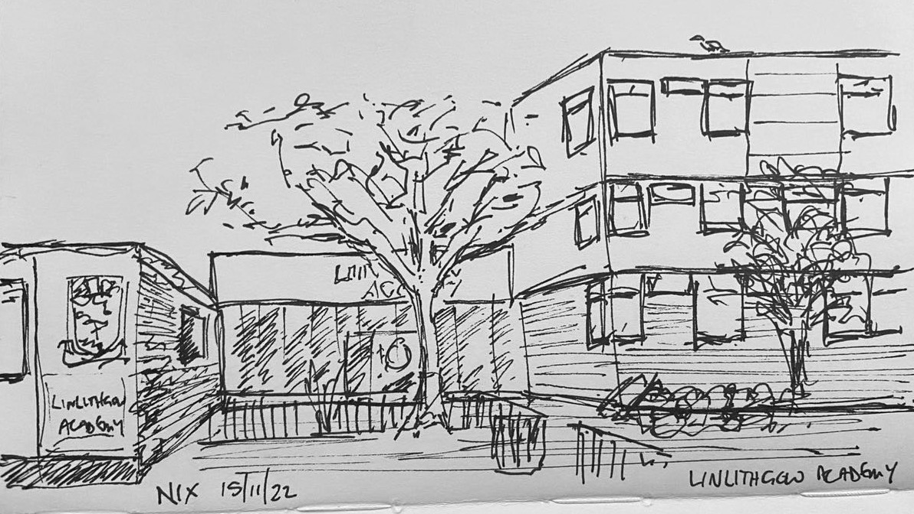
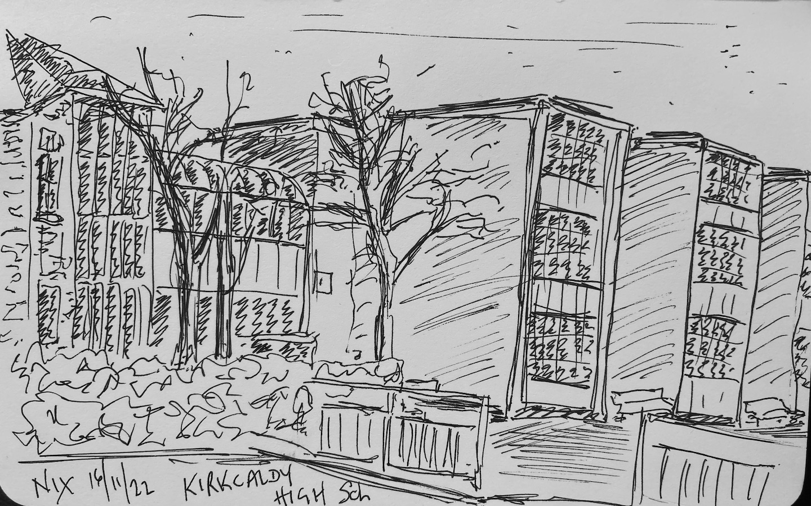

School Sketches
During late November and early December, my job has required me to make visits to schools. The schedule can be challenging so I always try to arrive around 20 minutes early so as to check any messages, and enter the school with grace and dignity. On this cycle of visits, I thought I’d use the extra time to also practice some sketching.
 Linlithgow Academy
There is a rationale for this habit. Sketching is a deliberate, mindful process, even when done quickly. It helps you see what is there, and the looking doesn’t stop when the sketchbook is closed. At Linlithgow, I found myself studying wall displays, people, the dynamic of school reception spaces, looking at shapes and patterns as much as inscriptions. I even got the chance to assist some not-yet-detective material police officers in their hunt for the reception desk, being able to indicate the huge sign that my fine-tuned sketcher’s observational skills had spotted in the lobby.
Deans Community High School
We continue to invest in building new schools to replace older, more out of date infrastructure. This is a good thing for many reasons including sending a message to the country that education is important and valuable to us all. Whilst every school is different, certain design features and material choices appear in many of the recent builds, perhaps dating them. This is not to say they look the same – they do, in some respects, but each has its own features according to the perceived needs of the community they serve.
 Kirkcaldy High School
I taught Physics and Mathematics at Kirkcaldy High School for a number of years before replacing my own tutor at Moray House. I’m not going to reminisce about this old place but it was nice to go back for a visit and see friends and former colleagues again. I was reminded that cultures are slow to change and that whilst rolling stones may gather no moss, they do gather experience you don’t get standing still.
Preston Lodge High School
Bunsen burners, magnesium strips and good dialogic pedagogy made my job easy at Preston Lodge today. All the nicer to see more old friends, too. Education is a village, and once you’ve been at it a while, it can feel like going home when you meet again, people who have shared different parts of your journey. Conversations pick up where they left off, friendship hugs shock the pupils, and mutual respect is grown and shared from stories of careers unfolding. I love it when new teachers see that: they are enculturated into their vocation through the modelled behaviours of those that go before them, and shape them. There’s more to this than Vygotksy, or Bruner, or the latest educational fad.
Portobello High School
Preston Lodge and Portobello sketches are not the best likeness to the real thing, for similar reasons. At Preston Lodge, my view from the car was obscured by a large van and so I had to interpret and sketch what I felt was there. Isn’t that the point, though? The American photographer David Alan Harvey said, “Don’t shoot what it looks like. Shoot what it feels like.” This is my motivation in photography as much as in sketching, and exploring that idea is the principal reason for me wanting to sketch more often. At Portobello, a different large van also obscured the view, and I don’t have the confidence quite to stand in a car park sketching, in full view of the CCTV. I had a call to go in to school anyway, so I took a quick photo on my phone and sketched it up later in a café over lunch. From this experience, I think I do a better job sketching live, en plein air, than from a photo. Something seems to be missing in my drawing from a photo, at least where my skills are at present. Perhaps that will change with practice.
The lorry at Leith, with a fast rat
Leith Academy has a nice front façade but you can’t see it from where I parked, and the back of the building is ugly, so I sketched the random lorry in the car park instead. I did not find out what the vehicle does, or why it’s there, but it looks arty to me, even if it seems past its best service days. Leith has always felt like an arty school: it has interesting shaped science labs which are full of scope and character, even if some of the electrical infrastructure also seems past its best service days. The teachers are anything but, of course, nor the businesslike head teacher who introduced himself as I was preparing to leave for my next appointment. It’s great that there are schools like Leith who put the effort and investment into new teachers, for the wider good of Scottish education.
Musselburgh Grammar School
There is a quid pro quo, of course, in the benefit that mentors and other colleagues get from watching rookies make naïve mistakes and offering guidance and advice from experience, at the same time tapping in to new ideas and reconnecting to the principles of pedagogy that are fresh in the student teachers’ thinking. This was articulated in both schools I visited today by the supporting teachers who played their important part in bringing about fair and just evaluation of how their charges have progressed.
Queensferry CHS, in the fog
There was a thick fog for my journey across the Forth to Queensferry and I almost bottled doing the sketch because I don’t know how to draw fog. I had a word with myself and thought, “just put the pen marks where it’s dark, and don’t put them where it’s light”. Easier said than, done, I think, so I diverted myself by trying to capture a couple of figures approaching the pool of light from the lamp. I remember a sketcher artist I follow said that figures add interest to a sketch. I think they are right, but I prefer the Leith rat, if I’m honest.
Deans CHS again
Back to Deans again and a view from a different part of the car park. It’s interesting how varied these buildings can look, depending on where you look from. My wife calls my style “Roobarb”, for the unsteady hand that wiggles the lines. I did get an ‘O’ level many years ago in technical drawing, so I do know how to use a ruler but when I’m trying to work quickly – none of these sketches took more than about 10 minutes – the look is more one of impression than technical accuracy. I was conscious that I was cold sitting in the car at Deans and so the lines were more Roobarb than usual, perhaps. More figure suggestions, though, and they seem to be growing on me. I’m quite pleased with the silver birch, too, given that I’m not giving myself time to make 10,000 strokes for the leaves.
Dingwall
A long but pleasant drive up beyond Inverness took me to new territory, and once more found me shaking hands with colleagues who had passed through my tutorials at Moray House. It’s lovely to see the products of my labour thriving and making their mark on young people across the country. I am taking all the credit, of course, as I will for the superb teacher whose lesson on nuclear fission was one of the best I have ever seen. It’s not all me, of course: a lot of work goes in to becoming a teacher, especially a good one, and you have to bring a lot of things, too. Attitude, aptitude, wit, intelligence, humour, resilience, just to mention a few. Those who bring all of that with them perhaps don’t need much from me to succeed, but I do like to tell myself that I help them excel.
Broxburn Academy
As the weeks of touring schools come to an end for this session at least, I feel that I have been inspired by students, colleagues and the young people in schools. The student teachers have a steep learning curve, especially on their first school placement. Workload can be an issue, and both schools and the university urge the students to try to find a good, healthy, sustainable balance. I asked some of them what their “secret” is for managing this. All said that the balance is crucial to survival, and that part of that is remaining physically active through sport or exercise. Some of them run; others swim or play a sport. This advice I took myself today by going for a run in the early morning darkness.
Vehicles are often a challenge for schools at the beginning and end of the day, even more so when parking is limited, so the final visit of the tour found me arriving at my destination later than planned. I parked in a quiet residential area and enjoyed a walk through the catchment instead of having time to sketch. By now, I was thinking that although every school is different, I had probably sketched enough fairly-recently-built school buildings to have a good appreciation for their character.